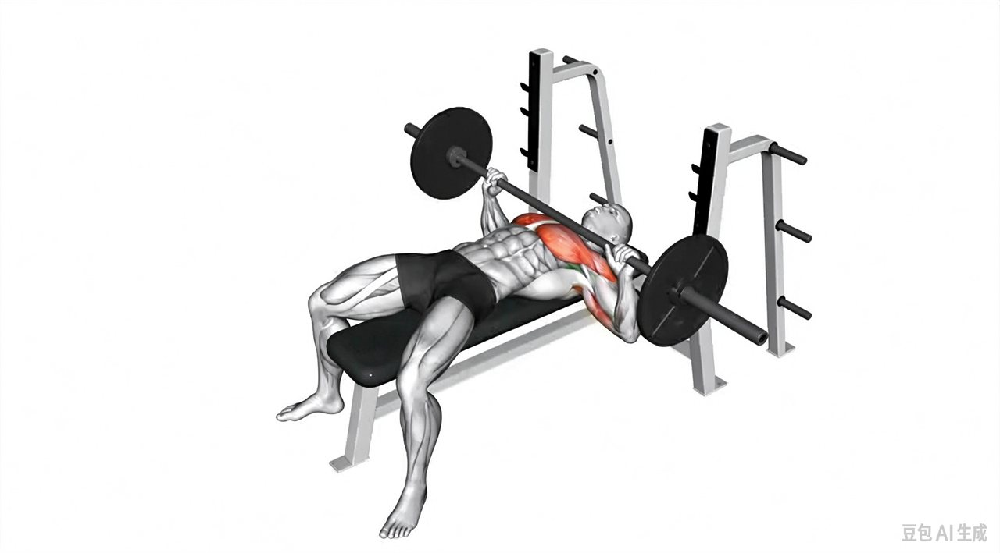

书籍
书名、作者、阅读笔记，以及对我训练的启发。
FITNESS / PERSONAL PRACTICE
从每一次训练出发，记录动作、想法、阅读和日常饮食。保留真实体验，也保留尚未找到答案的问题。
01 / PRACTICE
动作选择、训练文章与实际训练记录。
以增肌和力量为目标，梳理当前动作选择、组次安排、RPT式训练与弹性休息逻辑。
阅读全文
从动作选择，到自己的训练体系。02 / IDEAS & NOTES
健身理念与个人心得，从已有实践开始。
03 / REFERENCES
把读过、看过的资料和自己的理解放在一起。
书名、作者、阅读笔记，以及对我训练的启发。
原文链接、研究问题和阅读记录，逐步补充来源。
视频来源、动作观察与值得继续思考的内容。
04 / FOOD & RECIPES
从日常吃什么开始，慢慢积累自己的饮食记录。
常用食材、份量与购买记录。
我实际做过的搭配、做法与用量。
记录每天的饮食，以及与训练相处的体验。
05 / SUPPLEMENTS
补剂记录、使用体验与参考来源。
后续会在这里整理补剂名称、使用时间、个人体验和参考来源。当前尚未添加具体条目。